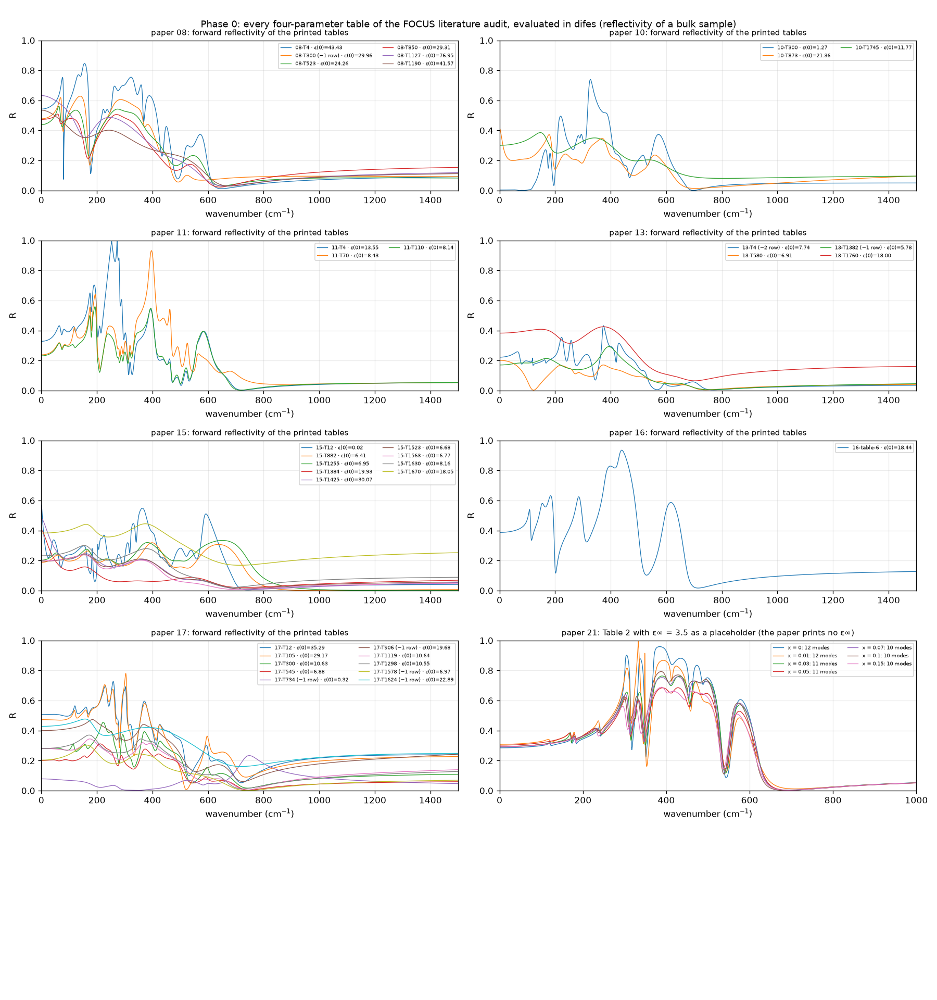
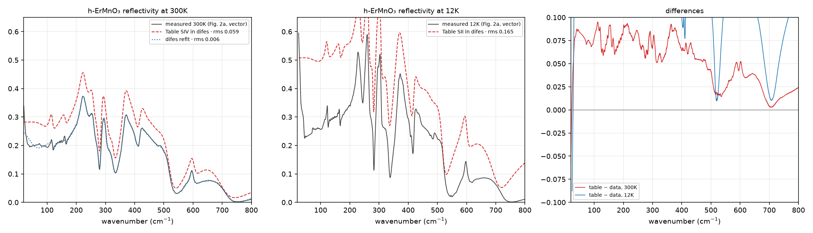
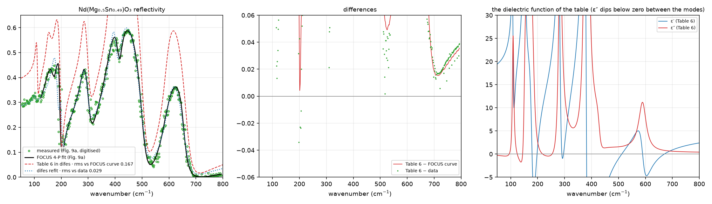
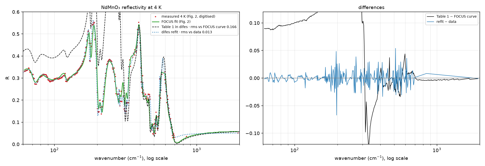
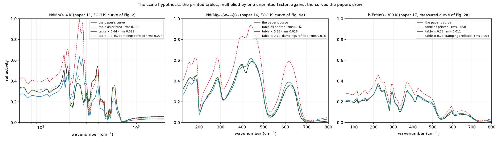

Eighteen papers that used FOCUS, audited and now being redone in difes one by one: every printed oscillator table evaluated, the figures digitised, the fits refitted. A ledger of what reproduces, what the papers do not let us reproduce, and what is asked of their authors.
Josu's request of 2 October: facts, until the app can be used with complete confidence. The literature search found 24 works that used FOCUS; the audit transcribed 68 datasets and 797 numbers from the 18 we hold, with 21 source issues. This page is the reproduction campaign on top of that audit. Each case is run by a script under difes/examples/literature/; the numbers below are its output. The honest finding so far is the one the chromium and the boron nitride already gave: where FOCUS's own curves or data are available, difes meets them; where only a printed table is available, the table often does not regenerate the paper's figure, and that is a fact about the publication, settled only by the authors' exports.
The audit’s parameter file is loaded directly (audit_models.py); each TO/\gamma_{TO}/LO/\gamma_{LO} table with its \varepsilon_\infty becomes a difes model of factorised four-parameter modes; malformed cells the audit left as null are left out and counted. For every dataset: \varepsilon(0) at \omega \to 0 against the audit’s independent arithmetic \varepsilon_\infty \prod (\Omega_{LO}/\Omega_{TO})^2, passivity of \varepsilon'' on 1–5000 \mathrm{cm}^{-1}, the forward reflectivity of a bulk sample.
| check | result |
|---|---|
| datasets evaluated | 36 four-parameter tables from papers 08, 10, 11, 13, 15, 16, 17 (plus the seven compositions of paper 21 with a placeholder \(\varepsilon_\infty\), since the paper prints none) |
| \(\varepsilon(0)\) against the audit's arithmetic | agreement to better than \(10^{-9}\) relative in 25 of 25 complete tables; the 7 others differ exactly because a malformed row is left out (the audit multiplied with its reading of the row) |
| passivity (\(\varepsilon'' \ge 0\) everywhere) | only 14 of 43 tables are passive as printed. The four-parameter product is not passive by construction: a mode whose \(\gamma_{LO}\) exceeds its neighbour's \(\gamma_{TO}\) pushes \(\varepsilon''\) below zero between modes. Paper 16's seven-mode table, the audit's cleanest benchmark, has \(\varepsilon'' < 0\) from 50 to 253 \(\mathrm{cm}^{-1}\), and at 12.6 GHz the printed table gives a negative loss, so its quoted \(Qf\) cannot come from the table as printed |
| known-bad rows | reproduced as the audit flagged them: 15-T12 gives \(\varepsilon(0) = 0.018\) (the LO 14.6 cell), 10-T300 gives 1.27 (the duplicated LO 142.5), 17-T734 gives 0.32 |

What this establishes: the model algebra difes implements is the one the audit wrote down from the papers, to machine precision, over 36 independent parameter sets. What it does not establish is agreement with FOCUS, because no FOCUS curve is involved yet.
Massa et al., Phys. Rev. B 102, 134305 (2020). Fig. 2a of the manuscript is a vector drawing: the near-normal reflectivity from 12 K to 300 K is read exactly (4 820 points per curve). Tables SII and SIV of the supplement give the four-parameter fits at 12 K and 300 K; the supplement’s Figs. S4 and S6 show those fits lying on the data.

| test | result |
|---|---|
| Table SIV (300 K, 16 rows, \(\varepsilon_\infty = 1.20\)) forward on the vector data | rms 0.059, the table sitting 0.06–0.09 above the data through the whole phonon region; its \(\varepsilon(0) = 10.6\) gives R(50 \(\mathrm{cm}^{-1}\)) = 0.28 where the data read 0.20. The printed table does not regenerate Fig. S6, in which the fit lies on the data |
| the lever | the broad mid-infrared row (TO 3852, LO 7446, dampings \(\approx 6\) 500) multiplies the whole far infrared by \((7446/3852)^2 = 3.7\). Without it, \(\varepsilon_\infty = 3.0\) alone brings the 15 phonon rows onto the data to rms 0.015 |
| difes refit from the table, all 65 parameters free | rms 0.0065 on 4 820 points; 12 of the 15 phonon frequencies move by less than 4 %; the three that move more are the two broadest (\(\gamma\) > 50) and the 100 \(\mathrm{cm}^{-1}\) mode at the edge of the data; the mid-infrared row moves 8 % |
| Table SII (12 K, 18 rows) forward | rms 0.165: the same offset, larger. Not refitted until the 300 K reading is confirmed with the authors |
Applied Physics A (2020), preprint. Table 6: seven four-parameter modes, \varepsilon_\infty = 5.01, \varepsilon(0) = 18.44 as the paper reports. Fig. 9a (measured circles, FOCUS’s 4-P fit as a line) digitised from the preprint at 200 dpi.

Table 6 evaluated in difes gives peaks of 0.93 where FOCUS’s drawn fit and the data have 0.59, and 0.40 at 60 \mathrm{cm}^{-1} where the figure reads 0.29; rms 0.167 against the drawn fit. The table is self-consistent with the reported \varepsilon_r = 18.44 but not with the figure: the figure’s low-frequency reflectivity implies \varepsilon(60) \approx 11, and the paper’s own Fig. 9b plots \varepsilon' \approx 18 there. difes’s refit from the table reaches rms 0.029 against the digitised data, at the digitisation precision of hollow markers (FOCUS’s curve itself is 0.034 from them), with \varepsilon_\infty 5.01 \to 3.76 and mode frequencies moving up to 21 %. A damping-only refit cannot repair the table. A question for the authors, not a result about difes.
Massa et al., J. Phys.: Condens. Matter 25, 395601 (2013). Josu sent the temperature series of Fig. 1 (traces displaced by 0.10, no reflectivity axis in the crop); the comparison uses Fig. 2, the 4 K spectrum with FOCUS’s fit drawn on it, on a logarithmic axis from 60 to 2 000 \mathrm{cm}^{-1}, taken from the PDF at its native 591 \times 395 pixels. Table 1 at 4 K: 25 modes, \varepsilon_\infty = 2.74.

Table 1 as printed gives rms 0.166 against FOCUS’s drawn fit, with R(70 \mathrm{cm}^{-1}) = 0.40 against 0.31 and peaks reaching far above the frame; above 1 000 \mathrm{cm}^{-1} the two agree (0.053 against 0.056), so \varepsilon_\infty is not the issue. difes’s refit of the 101 parameters from the table reaches rms 0.0125 against the digitised data, 15 of the 25 frequencies within 5 % of the table.
Three papers from two groups now show the same thing in the same direction: the printed four-parameter table gives a reflectivity above the fit the paper drew, in the phonon region, while the high-frequency end agrees. A table that is simply wrong would err in random directions. One explanation covers all three: the published fit multiplies the model reflectivity by a factor that is not printed, the usual way to fit a ceramic whose absolute reflectivity is lowered by porosity and surface roughness. The test: multiply the table by one number s and compare with the drawn curve.
| paper | table as printed | table \(\times s\) | \(s\) and the dampings refitted (frequencies, \(\varepsilon_\infty\) fixed) |
|---|---|---|---|
| 16 · \(\mathrm{Nd(Mg_{0.5}Sn_{0.49})O_3}\) | rms 0.167 | \(s = 0.66\), rms 0.028 (the digitisation level) | \(s = 0.72\), rms 0.018, dampings \(\times 1.1\) in the median |
| 17 · h-\(\mathrm{ErMnO_{3}}\) 300 K | rms 0.058 | \(s = 0.77\), rms 0.011 | \(s = 0.78\), rms 0.004, dampings \(\times 0.98\) in the median |
| 11 · \(\mathrm{NdMnO_{3}}\) 4 K | rms 0.166 | \(s = 0.64\), rms 0.092 | \(s = 0.46\), rms 0.024, dampings \(\times 1.3\) in the median: the factor explains half of it, the 4 K table has other problems (the audit's issue N02 flags two of its cells) |

The boron nitride case points the same way: Table 1 there gave an emissivity below the figure, which is what a reflectivity scaled down and turned into 1 - R produces. The factor is a hypothesis until the authors confirm it; what is already certain is that the tables’ frequencies are right (paper 17’s phonons within a few percent, paper 16’s peaks at the figure’s positions) and that the model algebra is not in question. FOCUS’s own “Factor” object was checked as a possible source and is only the name of its product container.
The FOCUS help shows a quartz E reflectivity drawn by FOCUS next to its OSML model file. Evaluated in difes, the file’s eight modes and \varepsilon_\infty = 2.386 agree with the drawn reststrahlen plateaus to 0.005 but sit 0.03 below the drawn curve in the low-reflectivity regions. The picture is 250 pixels wide with guessed axis limits, and the file may postdate it; this was recorded as inconclusive. Settled on 4 October: FOCUS’s own Quartz A2 sample project, exported with its computed curve, is met by difes to the file’s digits (see FOCUS’s sample projects). The four-parameter implementation is FOCUS’s, and the gap in the papers above is outside the model.
| paper | what FOCUS did | what can be checked | status |
|---|---|---|---|
| 07 · \(\mathrm{CaF_{2}}\), \(\mathrm{BaF_{2}}\), \(\mathrm{Al_{2}O_{3}}\) | Gaussian self-energy phonons, six temperatures | tables complete, vector figures | done: rms 0.004–0.014 forward, page |
| 17 · h-\(\mathrm{ErMnO_{3}}\) | 4-P product, ten temperatures, Drude at the top | vector data at 12 and 300 K; supplement tables | partial: tables do not regenerate the fits; refit meets the data; author export needed |
| 16 · Nd–Mg–Sn ceramic | 4-P product, seven modes | bitmap figure | partial: table inconsistent with its figure; refit at digitisation precision |
| 08 · \(\mathrm{BiFeO_{3}}\) | 4-P product, six temperatures | tables (two malformed cells), small bitmap panels | Phase 0 done; figure panels too small for a meaningful curve comparison |
| 10 · \(\mathrm{NdMnO_{3}}\) high T | 4-P + extended Drude; polarons downstream | tables (one duplicated LO), bitmap figures | Phase 0 done; the 300 K row and the Drude labels block the forward curve |
| 11 · \(\mathrm{NdMnO_{3}}\) low T | 4-P, 25 modes \(\times 3\) temperatures | tables, bitmap Fig. 2 at 4 K | partial: table above the drawn fit; refit at rms 0.0125; scale factor explains half |
| 13 · \(\mathrm{TmMnO_{3}}\) | 4-P + Drude | tables with punctuation errors; semi-log figures | Phase 0 done |
| 15 · o/c-\(\mathrm{ErMnO_{3}}\) | 4-P, Drude, Gaussian; polarons | tables (LO 14.6 blocker at 12 K) | Phase 0 done; blocked by the printed table |
| 21 · \(\mathrm{(Y,La)_2O_3}\) | 4-P, seven compositions | 76 rows, no \(\varepsilon_\infty\) | Phase 0 with a placeholder; \(\varepsilon_\infty\) to be fitted against the bitmap Fig. 6 |
| 03 · silica optical constants | eight causal Gaussians fitted to R built from Popova's n, k | table complete; the normalisation printed differs from paper 07's | next: evaluate both normalisations against the paper's residual figure; Popova's table needed for an exact test |
| 04 · finite-range KK (CFRC) | the method paper | correction coefficients, no synthetic inputs | difes has CFRC; a reproduction of the quartz example needs the reference model |
| 12 · gold nanoparticles | KK of Palik's interband data | fixed inputs, no optical dataset | needs Palik's table |
| 14 · graphene on SiC | semi-quantum SiC model, in a missing supplement | — | out of reach without the supplement |
| 05 · La–Nd stannate | 17-mode 4-P, only aggregates printed | — | needs the authors' oscillator export |
| 01, 09, 18, 19 | Raman peak decomposition, glass band fractions | trends and fractions, no complete parameters | outside the optical scope of difes; not pursued for this evidence |
For each of papers 11, 16 and 17 (and 08, 10, 13, 15 when their turn comes): the FOCUS project or its OSML export with declarations, the fitted curve as exported by FOCUS, the measured spectrum as a file, and one direct question: was a multiplicative factor applied to the model reflectivity in the fit, and if so which? With those, each case becomes what Irati’s project is: an exact comparison. The two groups are CEMHTI collaborators and the group’s own circle; the request is the same one Irati received.